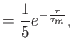
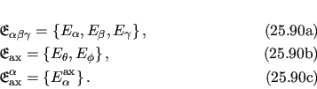
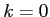
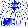

Next: PCS subset Up: Computation time and the Previous: Parallelization and running on Contents Index
The concept of model nesting is used to hugely speed up the optimisation in the automated protocol. The most complex models have 15 independent parameters, and performing a grid search over 15 dimensions of the pseudo-ellipse frame order model is not feasible when using PCS numerical integration. The idea is to use the optimised parameters of a simpler model as the starting point for a more complex model, avoiding the need for a grid search for those copied parameters. This appears to work as the PCS value is dominated by the average domain position, hence the average domain parameters are very similar in all models.
The modelling of the σ torsion angle gives a number of categories of related models, those with no torsion, those with restricted torsion, and the free rotors.
When σ = 0, the following models are defined:
When 0 < σ < π, the following models are defined:
When σ = π, i.e. there is no torsional restriction, the following models are defined:
This covers a single model - the double rotor.
There are three major parameter categories - the average domain position, the eigenframe of the motion, and the amplitude of the motion.
Let the translational parameters be
| (12.87) |
and the rotational or orientational parameters be
|  | (12.88) |
Two full average position parameter sets used in the frame order models are
This consists of either the full eigenframe or a single axis, combined with the pivot point(s) defining the origin of the frame(s) within the PDB space. The eigenframe parameters themselves are
|  |
The pivot parameter sets are
|  |
The parameters of order are
| (12.92) |
|  |
The parameter nesting used in the automated protocol is shown in table 12.2. This massively collapses the dimensionality of the initial grid search.